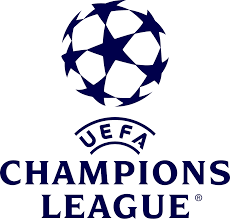
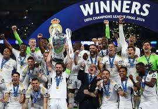
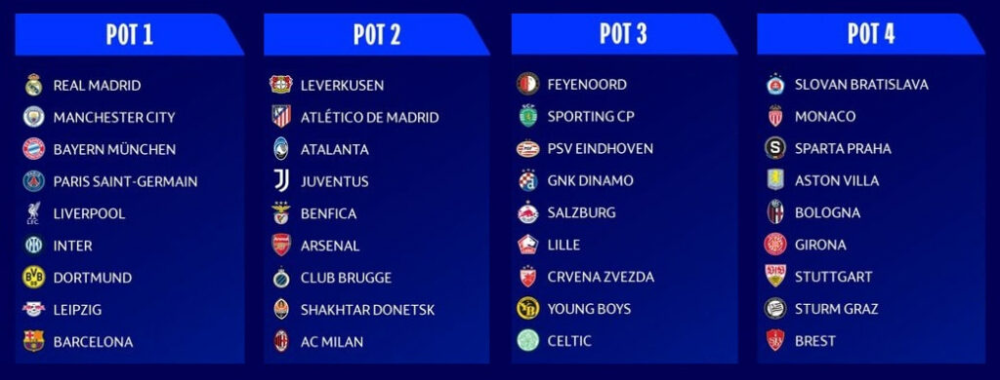
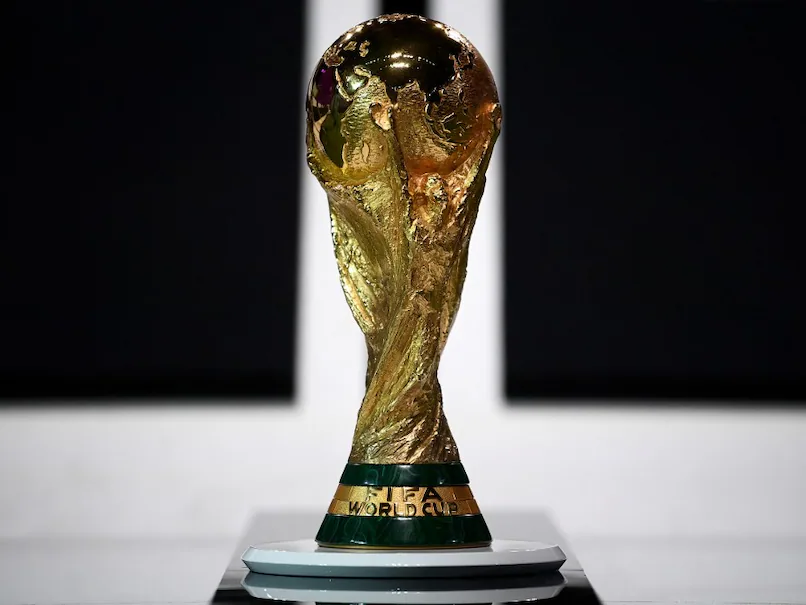

The favourites to win the champions league are 15 time winners Real Madrid, Bayern Munich, Liverpool and FC Barcelona.
Real Madrid had won the trophy last year by beating Borusia Dortmund.
The new champions legue format
his is the first season under a new format, with 36 participating teams that played eight games each against different opponents in a league phase, all the teams being ranked in a joint group. This will increase the total number of matches played in the competition from 125 to 189 (excluding qualifying rounds).
To vote for your favourite team, go to
Your OpinionThe world's most popular tournament, the FIFA world cup.
The current holders are Argentina. Their captain Lionel Messi being called as the best at the game.

The dominators